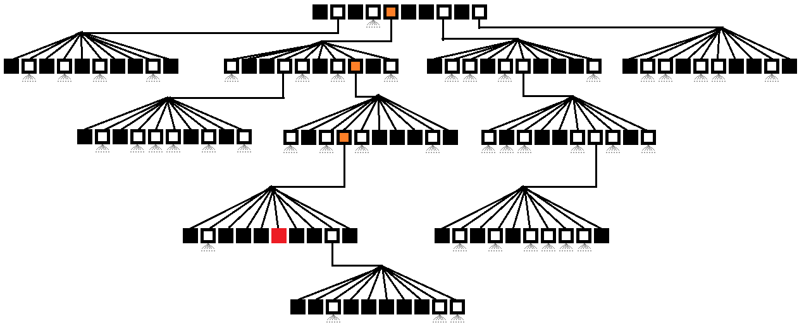

Functional idioms
Table of Contents
- 1 Functional Idioms
- 1.1 Immutability
- 1.2 Immutability
- 1.2.1 Matthew's notes
- 1.2.2 Persistent data structures
- 1.2.3 Structural sharing
- 1.2.4 one: stack
- 1.2.5 one: stack
- 1.2.6 one: stack
- 1.2.7 one: stack
- 1.2.8 one: stack
- 1.2.9 one: stack
- 1.2.10 one: stack
- 1.2.11 one: stack
- 1.2.12 two: sorted set
- 1.2.13 two: sorted set
- 1.2.14 two: sorted set
- 1.2.15 two: sorted set
- 1.2.16 three: doubly-linked lists
- 1.2.17 three: doubly-linked lists
- 1.2.18 four: trees (again)
- 1.2.19 four: trees (again)
- 1.2.20 four: trees (again)
- 1.2.21 Language support
- 1.3 Higher-Order Functions
- 1.4 Laziness
- 1.5
IterationRecursion
- 2 org-html-slideshow incantations
1 Functional Idioms
1.1 Immutability
1.2 Immutability
- Immutable things do not change over time
1.2.1 Matthew's notes notes
- A common objection - SO SLOW
- Can be implemented with copy-on-write
- Makes a complete copy on every change
- Better to use persistent datastructures
1.2.2 Persistent data structures
- "a data structure that always preserves the previous version of itself when it is modified."
- (nothing to do with database-style persistence)
1.2.3 Structural sharing
- A way of making persistent data structures efficiently
- Lets do an example…
1.2.4 one: stack
1.2.5 one: stack
+ s0 = empty_stack()
1.2.6 one: stack
+ s0 = empty_stack() + s1 = push(s0, "Z")
1.2.7 one: stack
+ s0 = empty_stack() + s1 = push(s0, "Z") + s2 = push(s1, "Y")
1.2.8 one: stack
+ s0 = empty_stack() + s1 = push(s0, "Z") + s2 = push(s1, "Y") + s3 = push(s2, "X")
1.2.9 one: stack
+ s0 = empty_stack() + s1 = push(s0, "Z") + s2 = push(s1, "Y") + s3 = push(s2, "X") + [v, s4] = pop(s3)
1.2.10 one: stack
+ s0 = empty_stack() + s1 = push(s0, "Z") + s2 = push(s1, "Y") + s3 = push(s2, "X") + [v, s4] = pop(s3) ;; v == "X", s4 == s2
1.2.11 one: stack
+ s0 = empty_stack() + s1 = push(s0, "Z") + s2 = push(s1, "Y") + s3 = push(s2, "X") + [v, s4] = pop(s3) ;; v == "X", s4 == s2 + s5 = push(s4, "Q")
1.2.12 two: sorted set
1.2.13 two: sorted set
+ s1 = ["a", "b", "c", "d", "f", "g", "h"]
1.2.14 two: sorted set
+ s1 = ["a", "b", "c", "d", "f", "g", "h"] + contains?(s1, "e")
1.2.15 two: sorted set
+ s1 = ["a", "b", "c", "d", "f", "g", "h"] + contains?(s1, "e") + s2 = insert(s, "e")
1.2.16 three: doubly-linked lists
1.2.17 three: doubly-linked lists
- ???
1.2.18 four: trees (again)
1.2.19 four: trees (again)

1.2.20 four: trees (again)
1.2.21 Language support
- If not provided with the core language, we can make a library
1.3 Higher-Order Functions


1.3.1 First-class functions
- Takes a function as an argument.
- Can return a function as a result.
1.3.2 Closures and lambdas
- Not strictly necessary, but…
1.3.3 Speaks your language?
- C
- Kinda. Function pointers get you some of the way there.
- C++
- Yes. Check the FC++ project. Also: lazyness, monads.
- Python
import functools - Java
- Yes but it's clunky.
- JavaScript
- Totally!
1.3.4 Haskell type notation
one :: a -> [a] -> [a] two :: (b -> c) -> (a -> b) -> a -> c three :: (a -> b) -> [a] -> [b] four :: (a -> Bool) -> [a] -> [a] five :: (a -> b -> a) -> a -> [b] -> a
1.3.4.1 Notes notes
- Currying
1.3.5 two: Composition
comp :: (b -> c) -> (a -> b) -> a -> c
- Takes two functions, f and g.
- Returns a new function x -> f(g(x)).
1.3.6 three: Map
map :: (a -> b) -> [a] -> [b]
- Takes a function and a list.
- Returns a new list with the results of applying the function to all elements of the list in order.
1.3.7 four: Filter
filter :: (a -> Bool) -> [a] -> [a]
- Takes a predicate and a list.
- Returns a new list containing only items which, when passed to the predicate, the predicate returned true.
1.3.8 five: Reduce
reduce :: (a -> b -> a) -> a -> [b] -> a
- Takes a function that combines two values in some way, an initial value and a list.
- Returns a value obtained by passing the first item of the list and the initial value to the function, then calls the function with the result of the last call and the second item of the list etc.
1.4 Laziness
1.4.1 Matthew's notes notes
- See the example